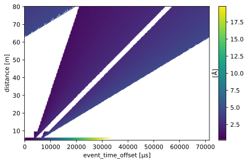

Create a wavelength lookup table for DREAM#
This notebook shows how to create a wavelength lookup table for the DREAM instrument.
[1]:
import scipp as sc
from ess.reduce import unwrap
from ess.reduce.nexus.types import AnyRun
from ess.dream.beamline import InstrumentConfiguration, choppers
Select the choppers#
We select the choppers for the ‘high-flux’ configuration.
[2]:
disk_choppers = choppers(InstrumentConfiguration.high_flux_BC240)
Note that possible configurations are high_flux_BC215, high_flux_BC240, and high_resolution.
Setting up the workflow#
[3]:
wf = unwrap.LookupTableWorkflow()
wf[unwrap.LtotalRange] = sc.scalar(5.0, unit="m"), sc.scalar(80.0, unit="m")
wf[unwrap.NumberOfSimulatedNeutrons] = 200_000 # Increase this number for more reliable results
wf[unwrap.SourcePosition] = sc.vector([0, 0, 0], unit='m')
wf[unwrap.DiskChoppers[AnyRun]] = disk_choppers
wf[unwrap.DistanceResolution] = sc.scalar(0.1, unit="m")
wf[unwrap.TimeResolution] = sc.scalar(250.0, unit='us')
wf[unwrap.PulsePeriod] = 1.0 / sc.scalar(14.0, unit="Hz")
wf[unwrap.PulseStride] = 1
wf[unwrap.PulseStrideOffset] = None
Compute the table#
[4]:
table = wf.compute(unwrap.LookupTable)
table.array
Downloading file 'ess/ess.h5' from 'https://github.com/scipp/tof-sources/raw/refs/heads/main/1/ess/ess.h5' to '/home/runner/.cache/tof'.
[4]:
scipp.DataArray (3.31 MB)
- distance: 754
- event_time_offset: 287
- distance(distance)float64m4.8, 4.900, ..., 80.000, 80.100
Values:
array([ 4.8, 4.9, 5. , 5.1, 5.2, 5.3, 5.4, 5.5, 5.6, 5.7, 5.8, 5.9, 6. , 6.1, 6.2, 6.3, 6.4, 6.5, 6.6, 6.7, 6.8, 6.9, 7. , 7.1, 7.2, 7.3, 7.4, 7.5, 7.6, 7.7, 7.8, 7.9, 8. , 8.1, 8.2, 8.3, 8.4, 8.5, 8.6, 8.7, 8.8, 8.9, 9. , 9.1, 9.2, 9.3, 9.4, 9.5, 9.6, 9.7, 9.8, 9.9, 10. , 10.1, 10.2, 10.3, 10.4, 10.5, 10.6, 10.7, 10.8, 10.9, 11. , 11.1, 11.2, 11.3, 11.4, 11.5, 11.6, 11.7, 11.8, 11.9, 12. , 12.1, 12.2, 12.3, 12.4, 12.5, 12.6, 12.7, 12.8, 12.9, 13. , 13.1, 13.2, 13.3, 13.4, 13.5, 13.6, 13.7, 13.8, 13.9, 14. , 14.1, 14.2, 14.3, 14.4, 14.5, 14.6, 14.7, 14.8, 14.9, 15. , 15.1, 15.2, 15.3, 15.4, 15.5, 15.6, 15.7, 15.8, 15.9, 16. , 16.1, 16.2, 16.3, 16.4, 16.5, 16.6, 16.7, 16.8, 16.9, 17. , 17.1, 17.2, 17.3, 17.4, 17.5, 17.6, 17.7, 17.8, 17.9, 18. , 18.1, 18.2, 18.3, 18.4, 18.5, 18.6, 18.7, 18.8, 18.9, 19. , 19.1, 19.2, 19.3, 19.4, 19.5, 19.6, 19.7, 19.8, 19.9, 20. , 20.1, 20.2, 20.3, 20.4, 20.5, 20.6, 20.7, 20.8, 20.9, 21. , 21.1, 21.2, 21.3, 21.4, 21.5, 21.6, 21.7, 21.8, 21.9, 22. , 22.1, 22.2, 22.3, 22.4, 22.5, 22.6, 22.7, 22.8, 22.9, 23. , 23.1, 23.2, 23.3, 23.4, 23.5, 23.6, 23.7, 23.8, 23.9, 24. , 24.1, 24.2, 24.3, 24.4, 24.5, 24.6, 24.7, 24.8, 24.9, 25. , 25.1, 25.2, 25.3, 25.4, 25.5, 25.6, 25.7, 25.8, 25.9, 26. , 26.1, 26.2, 26.3, 26.4, 26.5, 26.6, 26.7, 26.8, 26.9, 27. , 27.1, 27.2, 27.3, 27.4, 27.5, 27.6, 27.7, 27.8, 27.9, 28. , 28.1, 28.2, 28.3, 28.4, 28.5, 28.6, 28.7, 28.8, 28.9, 29. , 29.1, 29.2, 29.3, 29.4, 29.5, 29.6, 29.7, 29.8, 29.9, 30. , 30.1, 30.2, 30.3, 30.4, 30.5, 30.6, 30.7, 30.8, 30.9, 31. , 31.1, 31.2, 31.3, 31.4, 31.5, 31.6, 31.7, 31.8, 31.9, 32. , 32.1, 32.2, 32.3, 32.4, 32.5, 32.6, 32.7, 32.8, 32.9, 33. , 33.1, 33.2, 33.3, 33.4, 33.5, 33.6, 33.7, 33.8, 33.9, 34. , 34.1, 34.2, 34.3, 34.4, 34.5, 34.6, 34.7, 34.8, 34.9, 35. , 35.1, 35.2, 35.3, 35.4, 35.5, 35.6, 35.7, 35.8, 35.9, 36. , 36.1, 36.2, 36.3, 36.4, 36.5, 36.6, 36.7, 36.8, 36.9, 37. , 37.1, 37.2, 37.3, 37.4, 37.5, 37.6, 37.7, 37.8, 37.9, 38. , 38.1, 38.2, 38.3, 38.4, 38.5, 38.6, 38.7, 38.8, 38.9, 39. , 39.1, 39.2, 39.3, 39.4, 39.5, 39.6, 39.7, 39.8, 39.9, 40. , 40.1, 40.2, 40.3, 40.4, 40.5, 40.6, 40.7, 40.8, 40.9, 41. , 41.1, 41.2, 41.3, 41.4, 41.5, 41.6, 41.7, 41.8, 41.9, 42. , 42.1, 42.2, 42.3, 42.4, 42.5, 42.6, 42.7, 42.8, 42.9, 43. , 43.1, 43.2, 43.3, 43.4, 43.5, 43.6, 43.7, 43.8, 43.9, 44. , 44.1, 44.2, 44.3, 44.4, 44.5, 44.6, 44.7, 44.8, 44.9, 45. , 45.1, 45.2, 45.3, 45.4, 45.5, 45.6, 45.7, 45.8, 45.9, 46. , 46.1, 46.2, 46.3, 46.4, 46.5, 46.6, 46.7, 46.8, 46.9, 47. , 47.1, 47.2, 47.3, 47.4, 47.5, 47.6, 47.7, 47.8, 47.9, 48. , 48.1, 48.2, 48.3, 48.4, 48.5, 48.6, 48.7, 48.8, 48.9, 49. , 49.1, 49.2, 49.3, 49.4, 49.5, 49.6, 49.7, 49.8, 49.9, 50. , 50.1, 50.2, 50.3, 50.4, 50.5, 50.6, 50.7, 50.8, 50.9, 51. , 51.1, 51.2, 51.3, 51.4, 51.5, 51.6, 51.7, 51.8, 51.9, 52. , 52.1, 52.2, 52.3, 52.4, 52.5, 52.6, 52.7, 52.8, 52.9, 53. , 53.1, 53.2, 53.3, 53.4, 53.5, 53.6, 53.7, 53.8, 53.9, 54. , 54.1, 54.2, 54.3, 54.4, 54.5, 54.6, 54.7, 54.8, 54.9, 55. , 55.1, 55.2, 55.3, 55.4, 55.5, 55.6, 55.7, 55.8, 55.9, 56. , 56.1, 56.2, 56.3, 56.4, 56.5, 56.6, 56.7, 56.8, 56.9, 57. , 57.1, 57.2, 57.3, 57.4, 57.5, 57.6, 57.7, 57.8, 57.9, 58. , 58.1, 58.2, 58.3, 58.4, 58.5, 58.6, 58.7, 58.8, 58.9, 59. , 59.1, 59.2, 59.3, 59.4, 59.5, 59.6, 59.7, 59.8, 59.9, 60. , 60.1, 60.2, 60.3, 60.4, 60.5, 60.6, 60.7, 60.8, 60.9, 61. , 61.1, 61.2, 61.3, 61.4, 61.5, 61.6, 61.7, 61.8, 61.9, 62. , 62.1, 62.2, 62.3, 62.4, 62.5, 62.6, 62.7, 62.8, 62.9, 63. , 63.1, 63.2, 63.3, 63.4, 63.5, 63.6, 63.7, 63.8, 63.9, 64. , 64.1, 64.2, 64.3, 64.4, 64.5, 64.6, 64.7, 64.8, 64.9, 65. , 65.1, 65.2, 65.3, 65.4, 65.5, 65.6, 65.7, 65.8, 65.9, 66. , 66.1, 66.2, 66.3, 66.4, 66.5, 66.6, 66.7, 66.8, 66.9, 67. , 67.1, 67.2, 67.3, 67.4, 67.5, 67.6, 67.7, 67.8, 67.9, 68. , 68.1, 68.2, 68.3, 68.4, 68.5, 68.6, 68.7, 68.8, 68.9, 69. , 69.1, 69.2, 69.3, 69.4, 69.5, 69.6, 69.7, 69.8, 69.9, 70. , 70.1, 70.2, 70.3, 70.4, 70.5, 70.6, 70.7, 70.8, 70.9, 71. , 71.1, 71.2, 71.3, 71.4, 71.5, 71.6, 71.7, 71.8, 71.9, 72. , 72.1, 72.2, 72.3, 72.4, 72.5, 72.6, 72.7, 72.8, 72.9, 73. , 73.1, 73.2, 73.3, 73.4, 73.5, 73.6, 73.7, 73.8, 73.9, 74. , 74.1, 74.2, 74.3, 74.4, 74.5, 74.6, 74.7, 74.8, 74.9, 75. , 75.1, 75.2, 75.3, 75.4, 75.5, 75.6, 75.7, 75.8, 75.9, 76. , 76.1, 76.2, 76.3, 76.4, 76.5, 76.6, 76.7, 76.8, 76.9, 77. , 77.1, 77.2, 77.3, 77.4, 77.5, 77.6, 77.7, 77.8, 77.9, 78. , 78.1, 78.2, 78.3, 78.4, 78.5, 78.6, 78.7, 78.8, 78.9, 79. , 79.1, 79.2, 79.3, 79.4, 79.5, 79.6, 79.7, 79.8, 79.9, 80. , 80.1]) - event_time_offset(event_time_offset)float64µs0.0, 249.750, ..., 7.118e+04, 7.143e+04
Values:
array([ 0. , 249.75024975, 499.5004995 , 749.25074925, 999.000999 , 1248.75124875, 1498.5014985 , 1748.25174825, 1998.001998 , 2247.75224775, 2497.5024975 , 2747.25274725, 2997.002997 , 3246.75324675, 3496.5034965 , 3746.25374625, 3996.003996 , 4245.75424575, 4495.5044955 , 4745.25474525, 4995.004995 , 5244.75524476, 5494.50549451, 5744.25574426, 5994.00599401, 6243.75624376, 6493.50649351, 6743.25674326, 6993.00699301, 7242.75724276, 7492.50749251, 7742.25774226, 7992.00799201, 8241.75824176, 8491.50849151, 8741.25874126, 8991.00899101, 9240.75924076, 9490.50949051, 9740.25974026, 9990.00999001, 10239.76023976, 10489.51048951, 10739.26073926, 10989.01098901, 11238.76123876, 11488.51148851, 11738.26173826, 11988.01198801, 12237.76223776, 12487.51248751, 12737.26273726, 12987.01298701, 13236.76323676, 13486.51348651, 13736.26373626, 13986.01398601, 14235.76423576, 14485.51448551, 14735.26473526, 14985.01498501, 15234.76523477, 15484.51548452, 15734.26573427, 15984.01598402, 16233.76623377, 16483.51648352, 16733.26673327, 16983.01698302, 17232.76723277, 17482.51748252, 17732.26773227, 17982.01798202, 18231.76823177, 18481.51848152, 18731.26873127, 18981.01898102, 19230.76923077, 19480.51948052, 19730.26973027, 19980.01998002, 20229.77022977, 20479.52047952, 20729.27072927, 20979.02097902, 21228.77122877, 21478.52147852, 21728.27172827, 21978.02197802, 22227.77222777, 22477.52247752, 22727.27272727, 22977.02297702, 23226.77322677, 23476.52347652, 23726.27372627, 23976.02397602, 24225.77422577, 24475.52447552, 24725.27472527, 24975.02497502, 25224.77522478, 25474.52547453, 25724.27572428, 25974.02597403, 26223.77622378, 26473.52647353, 26723.27672328, 26973.02697303, 27222.77722278, 27472.52747253, 27722.27772228, 27972.02797203, 28221.77822178, 28471.52847153, 28721.27872128, 28971.02897103, 29220.77922078, 29470.52947053, 29720.27972028, 29970.02997003, 30219.78021978, 30469.53046953, 30719.28071928, 30969.03096903, 31218.78121878, 31468.53146853, 31718.28171828, 31968.03196803, 32217.78221778, 32467.53246753, 32717.28271728, 32967.03296703, 33216.78321678, 33466.53346653, 33716.28371628, 33966.03396603, 34215.78421578, 34465.53446553, 34715.28471528, 34965.03496503, 35214.78521479, 35464.53546454, 35714.28571429, 35964.03596404, 36213.78621379, 36463.53646354, 36713.28671329, 36963.03696304, 37212.78721279, 37462.53746254, 37712.28771229, 37962.03796204, 38211.78821179, 38461.53846154, 38711.28871129, 38961.03896104, 39210.78921079, 39460.53946054, 39710.28971029, 39960.03996004, 40209.79020979, 40459.54045954, 40709.29070929, 40959.04095904, 41208.79120879, 41458.54145854, 41708.29170829, 41958.04195804, 42207.79220779, 42457.54245754, 42707.29270729, 42957.04295704, 43206.79320679, 43456.54345654, 43706.29370629, 43956.04395604, 44205.79420579, 44455.54445554, 44705.29470529, 44955.04495504, 45204.7952048 , 45454.54545455, 45704.2957043 , 45954.04595405, 46203.7962038 , 46453.54645355, 46703.2967033 , 46953.04695305, 47202.7972028 , 47452.54745255, 47702.2977023 , 47952.04795205, 48201.7982018 , 48451.54845155, 48701.2987013 , 48951.04895105, 49200.7992008 , 49450.54945055, 49700.2997003 , 49950.04995005, 50199.8001998 , 50449.55044955, 50699.3006993 , 50949.05094905, 51198.8011988 , 51448.55144855, 51698.3016983 , 51948.05194805, 52197.8021978 , 52447.55244755, 52697.3026973 , 52947.05294705, 53196.8031968 , 53446.55344655, 53696.3036963 , 53946.05394605, 54195.8041958 , 54445.55444555, 54695.3046953 , 54945.05494505, 55194.80519481, 55444.55544456, 55694.30569431, 55944.05594406, 56193.80619381, 56443.55644356, 56693.30669331, 56943.05694306, 57192.80719281, 57442.55744256, 57692.30769231, 57942.05794206, 58191.80819181, 58441.55844156, 58691.30869131, 58941.05894106, 59190.80919081, 59440.55944056, 59690.30969031, 59940.05994006, 60189.81018981, 60439.56043956, 60689.31068931, 60939.06093906, 61188.81118881, 61438.56143856, 61688.31168831, 61938.06193806, 62187.81218781, 62437.56243756, 62687.31268731, 62937.06293706, 63186.81318681, 63436.56343656, 63686.31368631, 63936.06393606, 64185.81418581, 64435.56443556, 64685.31468531, 64935.06493506, 65184.81518482, 65434.56543457, 65684.31568432, 65934.06593407, 66183.81618382, 66433.56643357, 66683.31668332, 66933.06693307, 67182.81718282, 67432.56743257, 67682.31768232, 67932.06793207, 68181.81818182, 68431.56843157, 68681.31868132, 68931.06893107, 69180.81918082, 69430.56943057, 69680.31968032, 69930.06993007, 70179.82017982, 70429.57042957, 70679.32067932, 70929.07092907, 71178.82117882, 71428.57142857])
- (distance, event_time_offset)float64Ånan, 0.216, ..., 3.445, 3.459σ = nan, 0.015, ..., 0.008, 0.011
Values:
array([[ nan, 0.21553714, 0.28025072, ..., nan, nan, nan], [ nan, 0.21553714, 0.27830519, ..., nan, nan, nan], [ nan, 0.21605755, 0.2734077 , ..., nan, nan, nan], ..., [3.46987646, 3.48251113, 3.49391018, ..., 3.44201364, 3.4536977 , 3.46987646], [3.46500312, 3.47820452, 3.49016415, ..., 3.43696796, 3.44930777, 3.46500312], [3.45949727, 3.47315679, 3.48620231, ..., 3.43141734, 3.44529715, 3.45949727]], shape=(754, 287))
Variances (σ²):
array([[ nan, 2.23402891e-04, 3.34392157e-03, ..., nan, nan, nan], [ nan, 2.23402891e-04, 3.23698411e-03, ..., nan, nan, nan], [ nan, 2.45517199e-04, 2.88185192e-03, ..., nan, nan, nan], ..., [7.77985339e-05, 9.95249274e-05, 7.20545934e-05, ..., 6.16357355e-05, 8.62494388e-05, 7.77985339e-05], [1.04376061e-04, 1.00252858e-04, 8.27809257e-05, ..., 8.14711948e-05, 7.17348875e-05, 1.04376061e-04], [1.11784349e-04, 7.90146484e-05, 9.00829259e-05, ..., 8.01564063e-05, 6.34797443e-05, 1.11784349e-04]], shape=(754, 287))
[5]:
table.plot()
[5]:

Save to file#
[6]:
table.save_hdf5('DREAM-high-flux-wavelength-lut-5m-80m-bc240.h5')